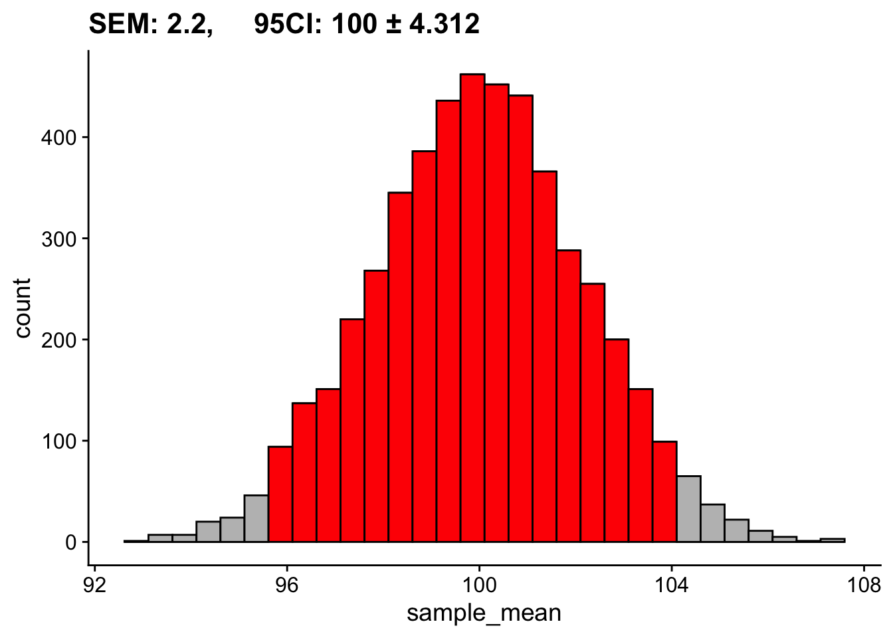
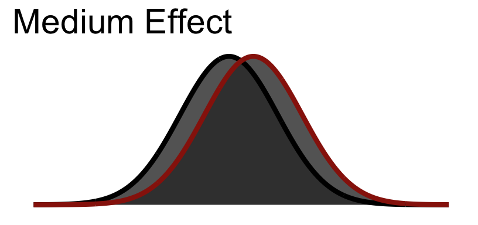

pacman::p_load(tidyverse, cowplot, glue)28 Effect Size
This walkthrough we are going to take a break from our discussions of Null Hypothesis Statistic Tests (sort of) and direct our attention to understanding two important and inter-related concepts for considering the significance of our observations. You’ve heard me before make the claim that just because you find some difference between means (e.g., t-test), correlation (i.e., from zero), or amount of variance accounted for by a model (e.g., regression) to be statistically significant does not necessarily mean that it is meaningful. For example, last week’s walkthroughs included a tongue in cheek comment about big-upping an \(R^2 = .06, p < .05\); and how, believe it or not, I’ve seen a paper in Psych Science that did that very thing (get me a few beers and I might give you a citation).
On the flip side, you might then be wondering, if statistically significant ≠ practically / theoretically / meaningfully significant then how can I make an a priori (before you collect your data) criteria by which to judge my data. After all the supposed beauty of the alpha value is that I can decide before hand that any result where \(p > .05\) does not meet my criteria for deciding a result to be meaningful. Well, I’m here to tell you that you can set an a priori criteria about what result truly is meaningful AND more then that, be informed as to whether or not your study is feasible, likely to produce a result (assuming an effect is there) and whether or not it’s even worth your time in the first place!
This week we talk about power and effect sizes.
Before jumping into this week’s content, a bit of a recap… just to show you how the past few weeks tie into this. Note that if you take a look at this Rmd, you’re likely to see a bunch of code (mostly for the figures) that is complex and not necessary for getting effect sizes (or power analyses for that matter) but might be useful for you if you ever want to put together some visualizations. Any chuck with echo=FALSE feel free to ignore.
29 Variation due to chance, sampling error, the standard error, and the 95% CI
We’ve talked at length about one critical fact regarding your data… that the parameters / descriptive stats of your empirically observed sample are very unlikely (i.e., practically impossible) to match the population parameters. More, not only is it unlikely that the mean from your sample equals the population mean, BUT the mean of a sample that you take today is not likely to match a sample from the same population taken tomorrow (variation due to chance). We demonstrated this fact by generating an example population and then simulated taking samples from it. First imagine running 5K simulations taking 50 people per sample.
set.seed(1)
population <- rnorm(n = 100000, sd = 15,mean = 100)
sampling_distribution_means <- tibble(simulation = 1:5000) %>%
group_by(simulation) %>%
mutate(sample_mean = sample(population,size = 50,replace = T) %>% mean())
# creating a simple histogram
sampling_distribution_means %>%
ggplot(., aes(x = sample_mean)) +
geom_histogram(fill="lightgrey", col="black") +
theme_cowplot()`stat_bin()` using `bins = 30`. Pick better value with `binwidth`.From this sampling distribution of means we know several things:
- that the standard error of the mean is simply the standard deviation of this distribution:
sd(sampling_distribution_means$sample_mean)[1] 2.184588- and the the 95% CI represents those values in which the middle 95% of the mean values fall. Those values are equal to M ± 1.96 SD. The mean of the above sampling distribution is 99.96 and SD = 2.16, so 95% of scores fall between about 95.69 and 104.31.
c(mean(sampling_distribution_means$sample_mean) - 1.96*sd(sampling_distribution_means$sample_mean),
mean(sampling_distribution_means$sample_mean) + 1.96*sd(sampling_distribution_means$sample_mean))[1] 95.69929 104.26287Visually this looks like:
`stat_bin()` using `bins = 30`. Pick better value with `binwidth`.
We also took a look at how this distribution changes as a function of our sample size. Based on the last two weeks discussions, \(N=30\) seems like a magic number. Instead of 50, let’s look at what happens if we run our simulations assuming we collected only 10 participants:
set.seed(1)
sampling_distribution_means <- tibble(simulation = 1:5000) %>%
group_by(simulation) %>%
mutate(sample_mean = sample(population,size = 10,replace = T) %>% mean())
mean_samp_dist=mean(sampling_distribution_means$sample_mean) %>% round(digits = 1)
sd_samp_dist=sd(sampling_distribution_means$sample_mean) %>% round(digits = 1)
c(mean(sampling_distribution_means$sample_mean) - 1.96*sd(sampling_distribution_means$sample_mean),
mean(sampling_distribution_means$sample_mean) + 1.96*sd(sampling_distribution_means$sample_mean))[1] 90.76674 109.15878`stat_bin()` using `bins = 30`. Pick better value with `binwidth`.Same population, same number of simulations, drastically different SEM and 95% CI. In the second case we are not as effectively estimating our population mean.
Together these two examples highlight something very important. Assuming all other things equal, our ability to effectively say something about our populations of interest is influenced by the number of people in our sample.
30 Estimating parameters from a single sample
While in this class we have often run simulations with our data to estimate parameters, the truth of the matter is that the simulation method is a fairly recent practice given the computational demands. Two or three decades ago, running 5000, 10000, 100000 simulations provided a given data set would have been not only inefficient, but practically untenable for most consumer computers. Algorithmic methods for parameter estimates (i.e., estimating a parameter given an equation based on the sample) not only go back more than a half century, but are still quite common practice today. For example, we made the claim that one could estimate the SEM by:
\[ SEM = \frac{SD_X}{\sqrt{N_X}} \]
where \(SD_X\) is the standard deviation of our sample scores and \(N_X\) is the number in our sample. Again we arrive at a value that provides us with a statement about how well we are estimating the mean parameter. However, I’d like to point out one very important consequence of this equation for SEM. Imagine that from a population I take two samples—the first of size 30 and the second of size 100. We assume that the differences in standard error that I report from those two populations is largely going to due to the differences in \(N\) (30 v. 100). To a much lesser degree they are going to be due to fluctuations in the \(SD\) from sample to sample.
31 Cohen brings the noise (Signal Detection Theory)
Variation due to chance suggests that any observation that I make via random sampling is always going to have some inherent degree of error. In a simple example, there is always going to be the true population mean and there is going to be the value that I obtain in any given sample. The latter jumps around stochastically; randomly from sample to sample.
Kicking this up to two samples drawn from theoretically distinct populations, this guarantees that any observed differences in means is also going to vary stochastically. For example, lets imagine two populations who’s mean Stats Proficiency Scores differ by 50; for the sake of comparison I’m going to keep their SDs identical. For any given experiment the observed difference between these groups is going to vary. We can note this in the difference distribution where despite a true difference of 50, some observed differences might be as little as 30 and as high as 70.
pop1 <- rnorm(100000, mean = 250, sd = 25)
pop2 <- rnorm(100000, mean = 300, sd = 25)
tibble(sim = 1:5000) %>%
group_by(sim) %>%
mutate(difference = mean(sample(pop2,size = 50))-mean(sample(pop1,size = 50))) %>%
ggplot(., aes(x=difference)) +
geom_histogram(fill="lightgrey", col="black") +
theme_cowplot() +
labs(title = "Difference distribution; simulations = 5000")`stat_bin()` using `bins = 30`. Pick better value with `binwidth`.This possibility for random variation presents a problem given all we have are our individual sample(s) to try to figure out whats going on with our population. In the larger sense of the above difference distribution it suggests that no single sample is likely to tell us the true differences between mean for our two groups. In the practical sense, we are unlikely to run 5000 separate experiments to obtain the difference distribution above. We’re likely only to run 1 or 2, and from those attempt to extrapolate our population parameters. Moreover in any single sample, scores are likely to vary around the sample mean.
Given we must estimate our SEM from our sample, we want to be able to get an impression about how big our population differences might be. But, as noted before scores in any individual sample are likely to vary randomly. In most scientific literature, random variation of this sort is termed “noise”. However, in our experiments we are typically looking for systematic, non-random variation… for example scores from one group are systematically higher than another. Thus, when comparing two samples, like an experimental group and a control, we need to uncover how much of our variation is systematic compared to how much of it is due to random fluctuations.
Enter Jacob Cohen who borrowed a useful idea at the time, signal detection theory which was created during the invention of the radio and radar. Radio is an apt example (if sightly outdated… does anyone listen to the radio anymore?) When one tunes their radio dial, they are attempting to pick up their desired channel or signal (WRKP in Cincinnati) amidst all of the other radio broadcasts and background noise (FWIW, similar principles apply for fiber optics, Wi-Fi, really anything where information is sent over a signal). The simple idea was that you want to know how strong a given signal needed to be for you to detect it over the noise. In our case the noise is the random variation in our samples and the signal is the effect of our experimental treatment or manipulation. From this we can ask ourselves two inter-related questions:
- how strong is the effect of our treatment in the face of random variation in our current experiment (how strong is our signal relative to the noise), and
- how strong would a potential treatment effect (in a future experiment) need to be in order for us to detect it? (how strong would a signal need to be to distinguish itself from the noise)?
The answers to these two questions are our effect size and power.
32 Effect size
As stated above, Effect Size is a measure of the strength of effect of our treatment in the face of random variation in our current experiment. While a simple example of effect size can be made using the comparison of mean differences, we should note our definition does not limit to just this simple case. Any measure that describes the relationship between systematic v. random variation is in effect… well, an Effect Size. For example, \(R^2\) (from last week) is a measure of effect size.
In the simple comparison of two sample means, we often invoke Cohen’s d (conceptually tied to d-prime from signal detection theory). Keeping with this metaphor, the control group is our noise and the signal is the effect of our treatment, ideally capture in the experimental group. Taking a look at the distribution of scores between our two groups might look something like this:
You’ll notice that even though there is separation between the group means, there is still a bit overlap between our groups. Conceptually this is akin to our experimental group containing some of the same inherent noise as the control group in addition to the signal or effect.
32.1 Cohen’s \(d\)
Cohen surmised that we could apply the same logic to experiments to determine how big the effect would be (in other words how easy it is to distinguish the signal from the noise).
\[ d = \frac{M_{H1}-\mu_{H0}}{S_{H1}} \]
You might notice you have seen this formula before!
\[ Z = \frac{M-\mu}{S} \]
So Cohen’s \(d\) is in standard deviation units:
| Size | \(d\) |
|---|---|
| Small | .2 |
| Medium | .5 |
| Large | .8 |
32.1.1 Small Visualized
32.1.2 Medium Visualized

32.1.3 Large Visualized
You notice that even in a large effect there is a lot of overlap between the curves.
32.2 Calculating effect size
Let’s return to our example data from our t-test walkthrough. Recall that we used this data from Hand et al. (1994):
Hand, et al., 1994, reported on family therapy as a treatment for anorexia. There were 17 girls in this experiment, and they were weighed before and after treatment. The weights of the girls, in pounds, is provided in the data below:
anorexia_data <- read_delim("https://www.uvm.edu/~statdhtx/methods8/DataFiles/Tab7-3.dat",
"\t", escape_double = FALSE, trim_ws = TRUE)Rows: 17 Columns: 3
── Column specification ────────────────────────────────────────────────────────
Delimiter: "\t"
chr (1): ID
dbl (2): Before, After
ℹ Use `spec()` to retrieve the full column specification for this data.
ℹ Specify the column types or set `show_col_types = FALSE` to quiet this message.# putting in long format
anorexia_data <- pivot_longer(data = anorexia_data,cols = c(Before,After),names_to = "Treatment",values_to = "Weight")So what is known: we have 17 total participants from (hypothetically) the same population that are measured twice (once Before treatment, and once After treatment). Based upon the experimental question we need to run a paired-sample (matched-sample) test.
t.test(Weight~Treatment, data=anorexia_data, paired=T)
Paired t-test
data: Weight by Treatment
t = 4.1802, df = 16, p-value = 0.0007072
alternative hypothesis: true mean difference is not equal to 0
95 percent confidence interval:
3.580571 10.948840
sample estimates:
mean difference
7.264706 We can estimate the effect size using the effectsize package and pasting in the exact same arguments that we used for the t-test.
In this case we want to calculate Cohen’s d. In this case I’m adding a correct since I have a small sample size (see ?cohens_d)
pacman::p_load(effectsize)
effectsize::cohens_d(Weight~Treatment, data=anorexia_data, paired = T,correction = T)Cohen's d | 95% CI
------------------------
1.01 | [0.41, 1.59]Pretty strong effect we’ve got here.
\(t(16) = 4.18, p < .001, d = 1.01\)